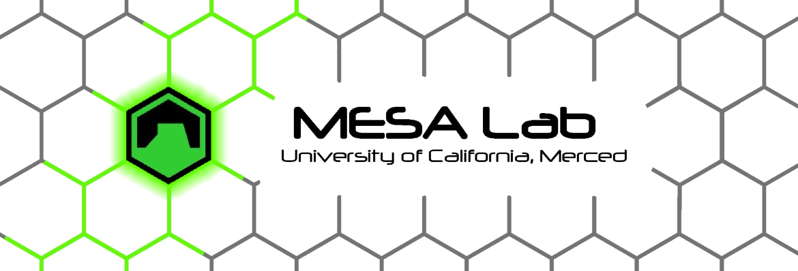

CITRIS Aviation specializes in gathering scientific data using unmanned aerial vehicles, with the goal of developing practical solutions in the fields of agriculture and landscape ecology, as well as promoting the use and understanding of aerial data collection in the community. To that end we conduct mapping flights for various university research projects, and also offer drone training courses.
The University of California Merced is a leader in UAV/UAS research. UCM houses the UC Center of Excellence on Unmanned Aircraft System Safety, which coordinates safe drone operations for the entire UC system. In addition, it is home to the Mechatronics, Embedded Systems & Automation (MESA) Lab, a state-of-the-art drone research & education lab led by Professor YangQuan Chen.
CITRIS Aviation builds upon UC Merced’s facilities and resources, offering research partnership opportunities to industry, and offering UAS instruction to their partners as well as to the general public.

UC Merced’s MESA (Mechatronics, Embedded Systems and Automation) Lab is a multidisciplinary collaborative space that focuses heavily on airborne research: building, flying, and modifying unmanned aerial systems (UAS) as well as aerial crop monitoring and analysis make up a large part of ongoing projects. MESA Lab collaborates with partners throughout the San Joaquin valley and beyond, including private agricultural growers, the USDA, PG&E and NASA/JPL.
Research topic include:
Mechatronics
UAS-based remote sensing
Cyber-Physical Systems
Modeling and Control of Renewable Energy Systems
Applied Fractional Calculus
UAS Safety offers expertise and ensures regulatory compliance for UAS operated within the entire University of California system. It also provides support and training for risk management and the safe operation. In addition, the Center is also authorized to grant certain forms of approval for UAS operations in the US via the Federal Aviation Administration.
Introduction to Drone Safety and Regulations
This base course is classroom only, and provides students with the tools to pass the CFA Part 107 exam, which is required to fly drones commercially.
Introduction to Safe Drone Operation
This course will cover the basics of drone piloting, mission planning and field operations.
Specialized Courses
Specialized topics such as aerial mapping, environmental sensing, and cinematography will be offered on a demand basis, or other specialized courses can be tailored to the needs of specific groups. Talk to us.
Register for Classes
extension.ucmerced.edu
Andreas Anderson, Instructor
aanderson29@ucmerced.edu